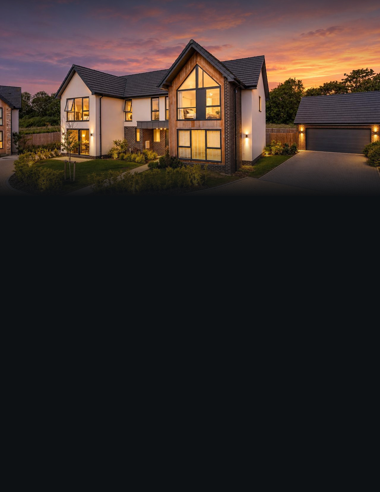
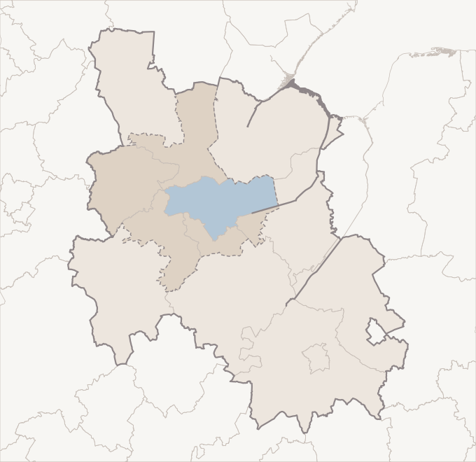
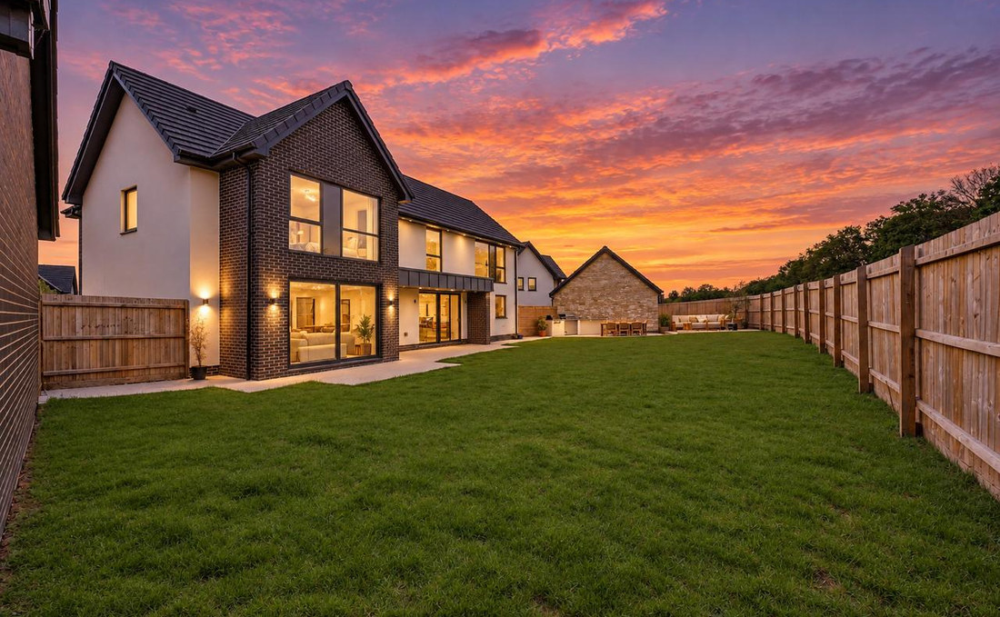

14 Otters Way · Digital Billboard Strategy
A house on the city’s southern edge, shown to the city that surrounds it.
Property
Otters Way, Hampton Water, Peterborough, PE7 8TX
Asking Price
£1,050,000
The House
2,793 sq ft (259 sq m) · 5 bedrooms · 3 bathrooms · 2 reception rooms
Where It Is Shown
Peterborough and the ten local authority areas around it
Duration
Thirty days, continuous
Prepared for the owner · The plan for the thirty days ahead
The Geography
One working city, and the ten areas that feed it.
The house stands on Otters Way in Hampton Water, on the southern edge of Peterborough. Advertising of this kind is bought by geography rather than by address, so the first question is what geography this house actually belongs to — and in Britain that answer is not a county line. It is the ground people cross to get to work, to school and to the shops.
The Office for National Statistics measures exactly that, and calls it a Travel to Work Area: a zone drawn so that most of the people who live in it also work in it. The house sits inside the Peterborough Travel to Work Area, six hundred and seven square miles of it, and that area is the spine of this campaign. Around it we have taken nine further local authority areas that trade daily with Peterborough. The whole footprint is outlined on the map.

14 Otters Way
Peterborough
Stamford
Spalding
Wisbech
March
Corby
Huntingdon
St Neots
Cambridge
Peterborough
Travel To Work Area
The Wider Footprint
Not Targeted
The location was established from the postcode’s own coordinates rather than taken on trust. PE7 8TX resolves, in the ONS Postcode Directory, to 52.526928°N 0.265235°W — Ordnance Survey grid reference TL 17784 93529. Tested as a point against the ONS boundary polygons themselves, those coordinates fall inside Peterborough (E06000031), inside the Peterborough Travel to Work Area (E30000108), in the ward of Hargate and Hempsted and the parliamentary constituency of North West Cambridgeshire.
The Footprint10 Areas
Peterborough 224,757
North Northamptonshire 379,569
Huntingdonshire 191,941
South Cambridgeshire 174,641
Cambridge 149,872
South Kesteven 148,069
Fenland 105,930
South Holland 100,758
East Cambridgeshire 94,599
Rutland 41,629
Residents In The Footprint1,611,765
ONS mid‑2025 population estimates, released July 2026
A Point Worth Getting Right
Peterborough is in the ceremonial county of Cambridgeshire, but it is not administered by Cambridgeshire County Council: it is a unitary authority in its own right, and the ONS record returns no administrative county for this postcode at all. We mention it because it changes what “Cambridgeshire” buys. Targeting the county alone would miss the city the house stands in. The footprint opposite is built from the individual areas instead, so nothing falls through that gap.
Postcodes, For The Record
The house is in PE7, one of the nine Peterborough postcode districts, PE1 to PE9. The footprint reaches across the rest of the PE area into Huntingdonshire and the Fens, and on into CB for Cambridge and Ely, NN for Corby and Kettering, and LE15 for Rutland.
The Argument
The buyer for this house is already on the road.
A million-pound house in central London sells to the world. A million-pound house on the edge of Peterborough does not, and pretending otherwise would waste the month. At this price, in this place, the buyer is a local one: a family already in the city or in the towns around it, moving up rather than moving in. They are in a car most mornings, and they are the reason roadside screens are the right instrument here rather than an afterthought.
01
Local and regional, deliberately
There is no national layer in this plan and no international one. Both would put the house in front of an enormous number of people who will never buy it. The whole of the delivery stays inside the footprint on the previous page, which is where a buyer for a five-bedroom house in Hampton Water can realistically be found.
02
The audience here drives
Peterborough sits where the A1 and the A47 cross, with the A15, the A605 and the parkway ring carrying the city’s own traffic, and the East Coast Main Line running through the station. People in this part of England move between towns by road far more than they move within one town on foot. That is what makes a screen beside a road worth having, and it is the reason the weight of this campaign goes there rather than into a shop window.
03
The garden is the advertisement
Five bedrooms on a new development is not, on its own, a scarce thing in this part of England. A garden of this size behind a new house is. The advertising leads with the rear elevation at dusk and the lawn running away from it, because that is the picture that stops the person who has been looking at everything else in Hampton and finding it tight.
04
One idea per screen, one address
A driver has a few seconds. Each frame carries the house, the price and the address, and nothing else — no feature list, no portrait, no competing logos. Every frame ends at the same short web address as the rest of the campaign, so a glance from a car can be picked up again on a phone that evening.
The House, In Figures
5 · 3
Bedrooms · Bathrooms
3.3 mi
To Peterborough Centre
The Targeting
Chosen by area, not by billboard.
These screens do not work the way billboards used to. We do not take one sign on one road for a month. They are bought programmatically: we tell the exchange which parts of the country to serve the house into, and it places the advertisement on whatever digital screens are free there while the campaign runs. There is no list of screen addresses in this document, and there will not be one. What we choose is the geography, and it is set out below.
Roads are named on these pages to explain where the audience is, never to describe where a screen sits. No road, junction or site is being singled out.
TierTargeted GeographyWhy It Is Included
01
Peterborough · the city and its southern townships — Hampton, Orton, Woodston, Fletton, Stanground, Yaxley
Highest priority
The city the house is in, and the single most likely origin of its buyer. These are households who already know Hampton, who have watched the water and the new streets go in, and who will recognise the road name without being told where it is. Peterborough holds roughly two hundred and twenty five thousand people on its own.
02
The rest of the Travel to Work Area · Rutland, Stamford, Bourne, the Deepings, Oundle
Highest priority
The stone towns west and north of the city, and the most comfortable money in the footprint. Stamford is twelve and a half miles from the house in a straight line and Oakham twenty two; both send people into Peterborough daily. This is the household that wants a modern house with space and good glass instead of another period one that needs work.
03
Huntingdonshire and the Fens · Huntingdon, St Ives, St Neots, Whittlesey, March, Wisbech
High priority
The towns south and east along the A1 and the A605, whose residents drive past the southern edge of Peterborough as a matter of routine. Huntingdon is fourteen miles from the house, Whittlesey six. Being seen here is being seen on the ordinary way in.
04
Greater Cambridge · Cambridge, Ely, the South Cambridgeshire villages
Moderate priority
Cambridge is twenty seven and a half miles from the house in a straight line, and the most expensive housing in the region. A household priced out of a garden there, but able to keep working there, is a real buyer for this house and an uncommonly good one. Included at a lower weight because that move is a decision, not a drift.
05
The county towns beyond · Spalding, Corby, Kettering
Steady presence
The Lincolnshire and Northamptonshire edges of the footprint, all within twenty two miles of the house. A lower share of delivery, so that the whole footprint is covered for the full thirty days rather than lit in bursts.
Where The Emphasis Sits
Tiers 01 and 02 take the largest share of delivery: one is the city itself, the other is where the money in this footprint lives. Huntingdonshire and the Fens take the next share, Greater Cambridge a smaller one, and the outer county towns run at a lower steady share so that nowhere inside the outline is dark.
We would rather run across the whole footprint for the full thirty days at a measured weight than crowd a fortnight and then vanish. One consequence of buying this way is worth saying plainly: we cannot promise you a photograph of your house on a named sign at a named junction. What we can tell you, once the month is out, is which parts of Cambridgeshire, Lincolnshire, Rutland and Northamptonshire saw it, and how often.

The garden at dusk
In A Straight Line
Yaxley 0.7 mi · Peterborough centre 3.3 mi · Whittlesey 6.1 mi · Oundle 9.1 mi · Stamford 12.5 mi · Huntingdon 14.0 mi · March 14.9 mi · Corby 18.5 mi · Spalding 18.6 mi · St Neots 20.7 mi · Kettering 21.4 mi · Oakham 21.9 mi · Ely 23.9 mi · Cambridge 27.5 mi — measured from the postcode’s coordinates; straight‑line, not driving times.
What Happens Next
The month ahead, in order.
The footprint, the tiers inside it and where the emphasis sits are decided; the reasoning is on the pages before this one. What follows is the sequence. The steps in black are settled and ours to run. The two in grey are figures that do not exist yet, left blank rather than estimated.
01
The Advertisement
Built from the photography of the house at dusk — the cedar gable lit from within, and the garden behind it — in the Aperture setting used across the rest of the campaign.
02
Your Sign‑Off
You see the advertisement and approve it before a single screen carries it. That one sign-off is yours.
03
At Launch
The campaign opens across all ten areas of the footprint at once, weighted to Peterborough and the Travel to Work Area around it.
04
Thirty Days
Continuous through the month that follows, at a measured weight, with no dark weeks and nowhere inside the outline unlit.
05
Impressions
To be confirmed. We will state a figure only once an operator has committed to one in writing, and it will then be the number we are held to.
06
Performance
Nothing measured. The campaign has not begun, so there is nothing here to read yet.
07
At The Close
Once the thirty days are run, a report: which parts of the footprint saw the house, and how often — whatever the operators are able to verify.
Two Things That Will Never Appear
No individual screen and no screen count, at any stage. These are not applicable to a campaign bought this way: screens are served programmatically across the targeted areas, and which ones carry the advertisement varies hour by hour with whatever the exchange has available. We cannot promise a photograph of your house on a named sign; we can tell you the geography it ran in.
The House, Online
Where every screen resolves.
The Rest Of The Campaign
Online advertising runs into the same footprint across the same thirty days, and is set out in its own document.
Your Agent
Krishan Mistry
Estate Agent · Aperture Global
+44 7904 644426
Krishan.Mistry@ApertureGlobal.com